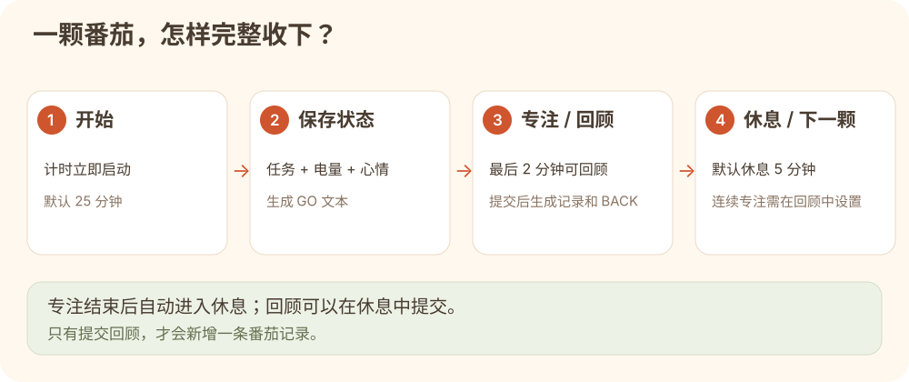
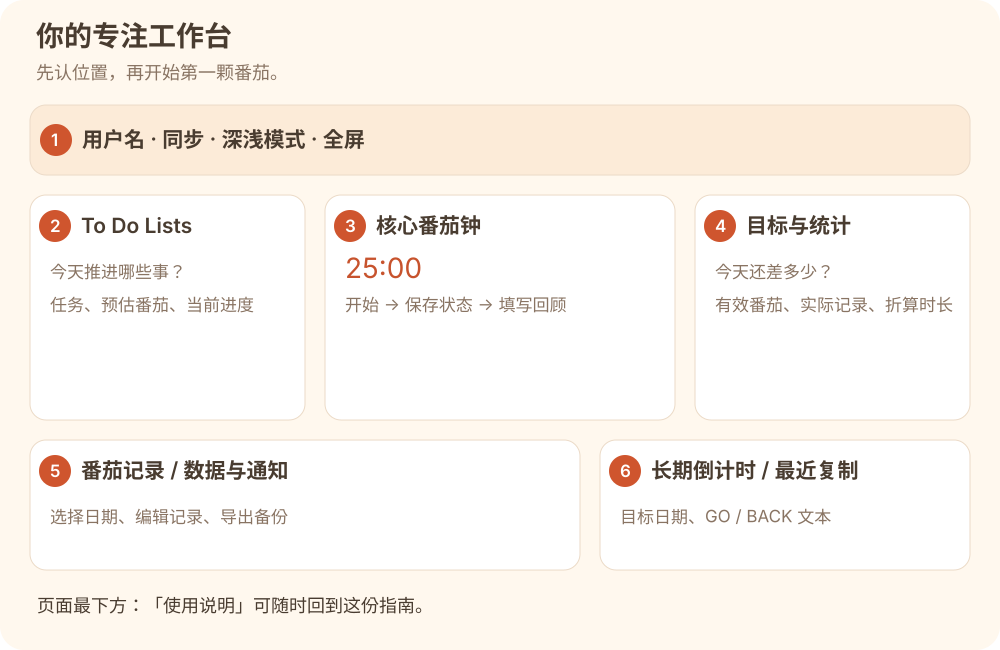
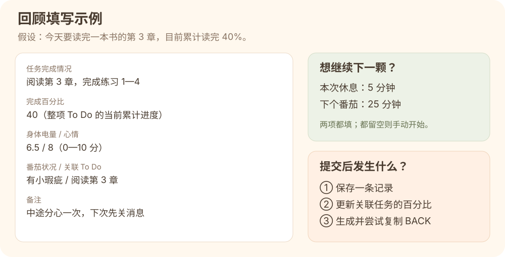
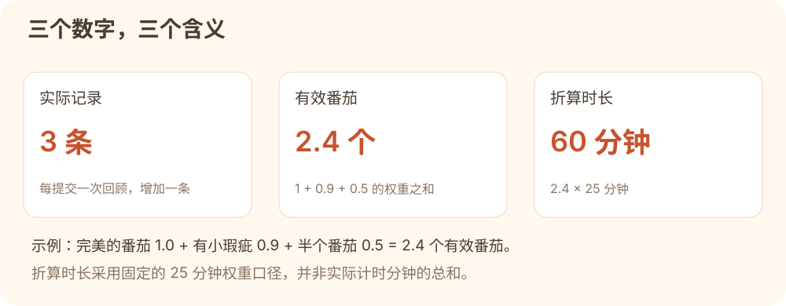
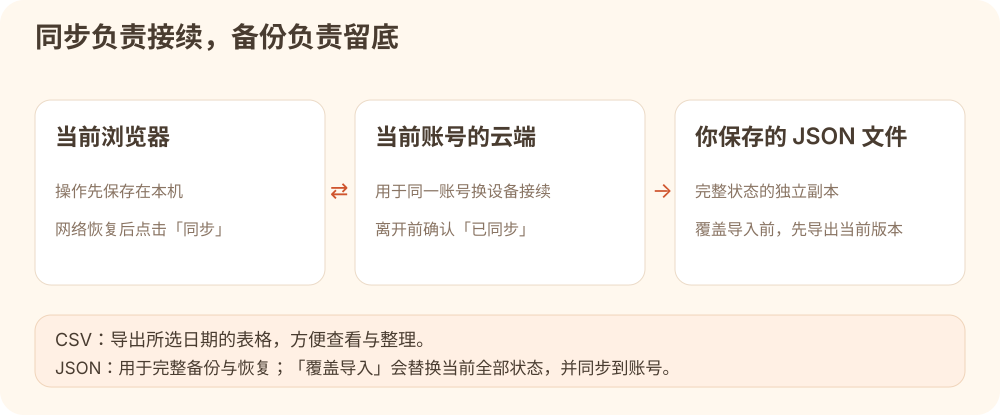

把专注的每一步，
慢慢种成收获。
这是番茄基地的完整图文指南。从开始计时，到记录状态、回顾成果和保存数据，你需要的操作都在这里。
本文配图是按现有功能绘制的操作示意，不包含任何用户的真实学习数据；具体按钮位置会随屏幕大小略有变化。小屏幕可左右滑动配图查看细节。
第一次使用：完成一颗番茄
先用默认的 25 分钟体验一次完整流程。你不需要先设置所有模块，先记录一次真实的专注就很好。
- 准备一个小目标。例如“阅读第 3 章并完成练习 1—4”。可以先在 To Do 中建任务，也可以计时开始后直接填写。
- 点击“开始 25 分钟专注”。倒计时会立刻开始。选择已有 To Do（可选），填写任务目标、身体电量、心情值，然后点击“保存当前状态”。
- 专注推进任务。临时离开可点击“暂停”，回来后继续；接近结束时，“填写回顾”会在最后 2 分钟开放。
- 提交一次回顾。填入完成情况、累计完成百分比、结束后的电量和心情，选择番茄状况，点击“提交回顾”。
- 休息并检查收获。专注结束后自动开始休息；提交的番茄会出现在记录表中，目标与统计一起更新。离开前查看顶部是否显示“已同步”。

开始时点击“保存当前状态”，结束时点击“提交回顾”。只让倒计时跑完，不会自动替你填写并保存一条番茄记录。
注册、登录与个人基地
第一次加入：需要邀请码
- 向邀请你使用网站的人获取邀请码。
- 在登录页点击“有邀请码，创建账号”。
- 填写用户名、密码和邀请码，提交注册。用户名为 3—64 个字符，密码为 8—256 个字符。
- 注册成功后进入自己的基地；顶部会显示“你的用户名的番茄基地”。例如用户名是 Xian，就显示“Xian的番茄基地”。
邀请码用于注册时验证，日常登录只需要用户名和密码。如果页面没有注册入口，请联系邀请人确认当前是否开放注册。
已有账号：直接登录
输入原来的用户名和密码登录。番茄基地、闪记卡和番茄游戏使用同一套账号；你的番茄数据按账号保存。伙伴应各自注册账号，避免多人共用一个账号。
请妥善保存用户名和密码。忘记密码或邀请码不可用时，联系网站管理者处理，不要反复注册替代账号来寻找旧数据。
认识你的工作台
页面把“接下来做什么”“当前专注什么”和“已经完成什么”放在同一个地方。桌面大屏并排显示，小屏幕可能需要上下或横向滚动。

- 顶部工具栏
- 显示当前用户、最近的未来目标、日期，以及同步、深浅模式和全屏按钮。
- To Do Lists
- 管理要推进的任务、预估番茄数量与累计完成百分比。
- 核心番茄钟
- 设置专注时长，记录开始状态，控制专注和休息，并填写回顾。
- 今日目标 / 番茄统计
- 查看今日目标完成情况，以及今日、本周、本月、本年的积累。
- 页面下半部分
- 查看历史记录、导出数据、设置通知，管理长期目标与 GO / BACK 复制内容。
To Do：把一件事拆成可推进的任务
- 点击“+ 新增 To Do”。
- 填写名称，例如“阅读第 3 章”；设置“预估番茄数量”，例如 4。
- 填写“当前完成百分比”（0—100），新任务通常填 0；备注可写资料页码或下一步。
- 点击“保存 To Do”。开始专注时，在“选择已有 To Do”中选择它。
清单上的数字怎么理解？
“预计”是你设置的番茄数量；“已完成”按预估番茄数量 × 当前完成百分比计算。比如预计 4 个番茄、完成 40%，清单会显示已完成 1.6 个。这是任务进度估算，不是关联记录条数的简单相加。
提交回顾时，如果关联了这个 To Do，填写的完成百分比会更新任务的当前进度。因此应填整项任务的累计进度：上次 20%，这次推进到 40%，填写 40，而不是填写本次新增的 20。
编辑和删除
点击任务中的“编辑”可调整名称、预估数量、进度与备注；点击“删除”需要确认。删除 To Do 后，已经提交的番茄记录会保留，但解除与这项任务的关联。
开始计时与保存当前状态
设置专注时长
点击番茄钟右上角的“25 min”等时长按钮，输入 1—180 分钟的整数并保存。默认值为 25 分钟。修改默认时长不会改变已经运行的当前倒计时，会用于下一次手动开始的番茄；连续专注的下一颗时长由回顾表单中的设置决定。
先启动，再填写状态
点击“开始 … 分钟专注”后，计时立即启动，随后出现状态表单。你可以选已有 To Do，也可以不关联任务，直接输入这次要做的事。
| 字段 | 怎么填 | 示例 |
|---|---|---|
| 选择已有 To Do | 可选。选择后会带入任务名称并建立关联。 | 阅读第 3 章 |
| 当前任务目标 | 必填。写清楚这一段时间打算推进的具体内容。 | 阅读 10 页，整理 3 条笔记 |
| 当前身体电量 | 必填，0—10 分，可用小数。按自己的精力感受填写。 | 6.5 |
| 当前心情值 | 必填，0—10 分，可用小数。用于回顾开始与结束的变化。 | 7.0 |
填完后点击“保存当前状态”。第一次保存会生成 GO 文本，并尝试复制到剪贴板。需要修正时可调整表单后再次保存，同一颗番茄不会因为再次保存而新增一条 GO。
提交回顾需要先保存开始时的任务、电量和心情。建议开始后立即完成这一步，再投入任务。
暂停、提前结束与重置的区别
| 操作 | 结果 | 适合什么时候 |
|---|---|---|
| 暂停 / 继续 | 冻结剩余时间；继续时从剩余时间接着计时。专注和休息都可以暂停。 | 临时接电话、短暂离开。 |
| 专注时提前结束 | 立即转入休息；尚未提交回顾时打开回顾表单。 | 任务提前完成，或这段专注需要结束。 |
| 休息时提前结束 | 结束本次休息。已设置连续专注且已提交回顾时，会进入下一颗；未提交回顾时提示补交。 | 已经休息好，准备继续。 |
| 重置 | 结束当前流程，需要确认。尚未提交的内容不会变成记录；已经提交的记录会保留。 | 误启动计时，或决定放弃本次未提交的番茄。 |
提前结束后仍应如实填写回顾，并选择适合的番茄状况。网站按你选择的状况计算有效番茄，不会根据本次实际计时长度自动打分。
填写回顾：把过程变成记录
专注进入最后 2 分钟时，可以点击“填写回顾”；专注结束后的休息阶段也可以填写。较短的番茄可能一开始就处于最后 2 分钟范围，仍需先保存开始状态。

| 字段 | 含义与填写方式 |
|---|---|
| 任务完成情况 | 必填。写实际成果，如“读完第 3 章前半，整理 3 条笔记”。 |
| 完成百分比 | 必填，0—100。关联 To Do 时，填这项任务的当前累计完成进度。 |
| 结束后身体电量 / 心情值 | 必填，0—10，可用小数。方便与开始状态对照。 |
| 番茄状况 | 选择本次专注的质量等级，决定这条记录的有效番茄权重。 |
| 关联 To Do | 可选。可以在回顾时确认或调整本条记录归属的任务。 |
| 备注 | 选填。记录分心原因、有效方法、困难或下次行动。 |
| 连续专注两项 | 选填。想自动继续时，同时填写本次休息时间与下个番茄时间。 |
提交后会发生什么？
- 新增一条番茄记录，更新目标与统计。
- 如果关联了 To Do，更新其当前完成百分比。
- 生成 BACK 文本，并尝试自动复制。
- 在最后 2 分钟提前提交时，当前专注倒计时继续运行，到点再进入休息；在休息中提交时，休息继续计时。
关闭回顾窗口会保留当前表单草稿，再次打开可以继续填写；草稿还不算正式记录。提交后的内容如需修正，请到番茄记录表点击“编辑”。
休息与连续专注
普通流程
专注结束后默认开始 5 分钟休息。在休息表单中可填写 1—120 分钟的整数，点击“修改休息时间”；这会按新值重新开始本次休息倒计时。休息也可以暂停和继续。
没有设置连续专注时，休息结束并提交回顾后，页面回到可开始下一颗的状态。如果休息结束时还没交回顾，会保留待提交状态，需要先补交。
连续专注：两项一起填
- 在“收下这个番茄”的回顾窗口，找到“连续专注（选填）”。
- 同时填写“本次休息时间”（1—120 分钟整数）和“下个番茄时间”（1—180 分钟整数）。例如分别填 5 和 25。
- 提交回顾。当前专注结束后按设定休息，休息结束会自动开始下一颗。
- 下一颗会带入上一颗的任务和结束状态作为参考，仍需确认并点击“保存当前状态”。
只填一个时间会提示补全；两项都留空则不启用。下一颗番茄如果还要自动接续，需要在下一次回顾里再设置。若休息已经结束才提交回顾，且设置了连续专注，下一颗会立即启动。
在休息途中通过回顾设置休息总时长时，会扣除已经休息的时间。例如设为 5 分钟、已休息 2 分钟，还剩约 3 分钟；这与休息表单的“修改休息时间”重新计时有所不同。
今日目标与统计：数字如何计算
设置今日目标
在“今日目标番茄数”中输入大于 0 的数并点击“设置”。默认目标为 8 个有效番茄，也可以设置小数。目标按有效番茄累计，进度条最多显示到 100%，实际完成量可以超过目标。

| 番茄状况 | 每条记录计入的有效番茄 |
|---|---|
| 完美的🍅 | 1.0 |
| 有小瑕疵🍅 | 0.9 |
| 被啃了一口🍅 | 0.7 |
| 有大瑕疵🍅 | 0.8 |
| 半个🍅 | 0.5 |
统计区域提供今日、本周、本月、本年四个时间范围。“本周”以周一为一周开始。日期依据浏览器本地日期；跨设备使用时，建议保持设备日期、时间和时区一致。
当前按“有效番茄 × 25 分钟”统一折算。即使把专注时长设置为 45 分钟，一条“完美的🍅”仍计为 1 个有效番茄、25 分钟折算时长。实际经过时间也可能受暂停影响。
查看、修改与导出历史记录
“今日番茄记录”默认显示今天的数据。通过标题旁的日期选择框，可以切换查看其他日期。
| 列名 | 内容 |
|---|---|
| Date / No. | 记录所属日期和当天番茄编号。 |
| Start / End | 开始与结束时间。 |
| Content | 提交回顾时填写的完成情况。 |
| State | 开始到结束的身体电量和心情变化。 |
| Remark | 番茄状况与备注。 |
| 操作 | 编辑或删除这一条记录。 |
修改一条记录
点击“编辑”，可修正完成情况、完成百分比、开始与结束时间、电量、心情、番茄状况、关联任务和备注。点击“保存修改”后相关统计会更新；修改关联任务的完成百分比也会更新任务当前进度。
删除一条记录
点击“删除”并确认后，该条记录从列表移除，统计随之变化。记录删除没有页面撤销按钮；任务进度是单独保存的当前百分比，如需回退，可再到 To Do 中手动调整。
导出所选日期 CSV
先选日期，再点击“导出当前日期 CSV”。下载文件只包含这一天的记录，可用表格软件打开。它适合整理和分享记录，不是全站完整备份，也不能通过“覆盖导入 JSON”来恢复。
长期目标倒计时
- 在“长期倒计时”中点击“+ 目标”。
- 填写目标名称、目标日期，可添加备注，然后保存。
- 目标按日期排列，显示剩余天数；到当天显示“就是今天”，过去的目标显示“已到期”。
- 点击目标旁的“编辑”或“删除”可管理它。
顶部会展示最近一个尚未过期的目标；没有未来或当天目标时，显示“暂无未来倒数日目标”。点击“换一句”可以换一条鼓励语，不会改变目标或统计。
长期目标用于提醒日期；To Do 用于管理任务进度，两者分别维护，不会自动互相转换。
GO / BACK：把开始和收获复制下来
GO 表示开始状态，第一次点击“保存当前状态”时生成；BACK 表示回顾结果，点击“提交回顾”时生成。你可以把它们贴到自己的学习日志或伙伴群中，网站本身不会自动发送给任何人。
1 GO | 阅读第 3 章 | 🔋7 😊6.5BACK 示例
1 BACK | 阅读第 3 章前半 40% | 🔋7→6.5 😊6.5→8 | 有小瑕疵🍅 | 合计0.9个🍅
调整复制格式
- 分隔符：可把默认的
|换成自己习惯的分隔文字。 - GO / BACK 大小写：可选择大写或小写。
- 显示项：勾选编号和类型、任务内容、电量心情、状态备注、今日合计；至少保留一项。
格式修改会用于列表中的复制显示。最近复制内容保留最近 10 条；可以点击最新文本旁的“一键复制”，也可以复制历史条目。
如果自动复制受浏览器权限限制，使用“一键复制”重试，或手动选择页面中的文本复制。历史复制条目是生成时的内容快照，之后修改番茄记录，不会把旧条目中的所有字段重新生成。
全屏专注与深浅模式
进入全屏
点击顶部“全屏专注”，浏览器允许后会显示更聚焦的专注界面。全屏里仍可开始计时、保存开始状态、暂停、填写回顾、提前结束和重置，也能查看日期、时间和今日番茄情况。
点击“退出全屏”或按 Esc 返回普通工作台。浏览器不支持或未允许原生全屏时，会出现提示，普通界面仍可继续使用。
切换主题
点击“深色”切换到深色主题，点击“浅色”切换回来。主题设置会保存。说明页使用独立的浅色阅读样式，方便长文阅读和打印。
声音提示与桌面通知
在“数据与通知设置”中点击“开启结束通知”，再在浏览器的权限提示中允许通知。按钮显示“通知已开启”表示浏览器已授予权限。
- 专注途中有轻柔声音提示，例如进入后半程和最后 2 分钟。
- 专注结束时有声音与页面提示；浏览器允许通知时，尝试发送结束通知。
- 休息结束也有提示。设备静音、系统勿扰、浏览器权限和后台限制会影响声音或通知。
如果之前拒绝过通知，需要在浏览器的网站设置里重新允许；页面无法替你更改系统或浏览器权限。“不支持通知”表示当前环境不具备这项能力。
请尽量保留计时标签页。关闭页面、设备休眠或浏览器暂停后台页面时，不能保证准时响铃，也不会在后台完整模拟多轮连续专注。重新打开后先检查当前计时和记录状态。
云端同步、换设备与临时断网
番茄基地会先把操作保存在当前浏览器，并在登录和网络可用时同步到当前账号的云端。顶部“用户：…”用于确认正在使用哪个账号；“同步”按钮同时显示同步状态，也可以点击手动同步。
| 状态 | 含义与建议 |
|---|---|
| 已同步 | 当前一次同步已完成。换设备或离开前检查这个状态。 |
| 待上传 / 同步中 | 有变更正在等待或正在传输。稍等后检查结果。 |
| 同步失败 | 本次同步未完成。先保留页面，检查网络，点击同步重试；可先导出 JSON 留底。 |
| 已保护 | 系统检测到记录异常减少，阻止了这次覆盖。先导出当前 JSON，联系管理者核对；不要为消除提示而清空或反复覆盖导入。 |
换设备的顺序
- 在原设备确认用户名正确，并等待“已同步”。
- 在新设备登录同一个账号，等云端数据加载完成。
- 核对最近一条记录和任务进度，再开始新一颗番茄。
多人各用自己的账号；多设备同时编辑同一账号时，系统会尝试合并变更，但同一项同时修改仍可能发生覆盖。建议只在一个设备上运行当前番茄，其他设备以查看为主。
临时断网时，已打开页面中的本机保存仍可能工作，但云端接续需要恢复网络并同步；首次打开网站或登录仍需要联网。尚未同步时，不要清除浏览器网站数据或切换到无痕窗口来“刷新数据”。
导出备份、恢复与清空数据

导出 JSON：完整留底
在“数据与通知设置”点击“导出 JSON”，下载当前完整状态，包括番茄记录、To Do、长期目标、设置、最近复制内容和当前计时状态。文件名含导出日期，建议保存在自己能找到的位置。
重要整理前、覆盖导入前、换设备前或周期性复盘时，都可以留一份。JSON 可能包含任务内容和备注，分享前留意其中的个人信息。这个文件不包含账号密码，也不会创建或替换登录账号。
覆盖导入 JSON：用备份替换当前状态
- 先确认当前登录的是要恢复的账号。
- 先导出当前 JSON，保留恢复前的版本。
- 点击“覆盖导入 JSON”，选择此前导出的备份文件。
- 阅读覆盖提示并确认。导入会替换当前全部状态，不是追加合并。
- 核对记录日期、任务、目标和可能恢复的计时状态；联网时等待“已同步”。
这两项不是只改一个浏览器的临时显示。操作后会尝试同步到当前账号，其他设备也可能看到结果。执行前务必保存独立备份。
清空全部数据
点击“清空全部数据”需要两次确认。它会清空番茄记录、To Do、长期目标、复制历史及当前计时，并重置设置；不会删除账号。页面没有一键撤销，想重新开始前请先导出 JSON。
JSON 与 CSV 选哪个？
| 需求 | 选择 | 范围 |
|---|---|---|
| 完整备份、恢复到某个版本 | JSON | 当前完整应用状态；可通过覆盖导入恢复。 |
| 整理某一天记录、用表格查看 | CSV | 当前所选日期的记录；不能用来完整恢复。 |
快捷键速查
| 按键 | 作用 |
|---|---|
| Space 空格 | 未在输入框、文本框或下拉框中输入时：没有番茄则开始；已有计时则暂停 / 继续。待回顾状态可能打开回顾。 |
| Ctrl + Enter | 回顾窗口打开时提交回顾，仍需满足表单必填要求。 |
| Esc | 优先关闭当前弹窗；没有弹窗时退出全屏；普通界面有当前计时时，会触发重置确认。 |
关闭弹窗也可以点击右上角“×”。使用 Esc 时留意当前页面状态，避免把重置确认误当成普通关闭提示。
遇到问题，先看这里
计时结束了，为什么记录表里没有新增番茄？
需要先保存开始状态，再填写并提交回顾。计时结束会进入休息，不会自动生成你尚未填写的成果。打开“填写回顾”完成提交，再检查所选记录日期是否正确。
为什么“填写回顾”还不能用？
专注进入最后 2 分钟后才开放；如果确实要提前结束，可以点击“提前结束”进入休息并回顾。提交前还要保存开始时的任务、电量和心情。
提交回顾后为什么计时还在走？
提前在最后 2 分钟提交时，专注会继续跑完；在休息中提交时，休息也继续运行。这表示成果已保存，当前计时流程仍在进行。
为什么改了专注时长，当前倒计时没变？
默认时长只影响下一次手动开始的番茄。当前计时按启动时的时长运行；连续专注的下一颗时长由回顾表单中的“下个番茄时间”指定。
为什么清单“已完成番茄数”和记录条数不同？
To Do 的“已完成”是预估数量乘以当前任务百分比；统计的“有效番茄”是记录状况的权重之和；“实际记录”才是提交的条数。三者计算口径不同，详见“目标与统计”。
为什么任务进度变小了？
关联 To Do 的回顾百分比会更新为本次填写值，而不是累加。如果任务原来完成 60%，本次填 20%，当前进度就可能变成 20%。请填写累计进度，并在 To Do 的编辑中修正。
复制失败怎么办？
点击“一键复制”重试；仍失败时，直接选择页面显示的文本手动复制。浏览器权限可能阻止自动写入剪贴板，复制失败不等于番茄记录保存失败。
为什么手机、另一台电脑或另一个浏览器看不到新记录？
确认两边使用相同账号；在原设备等待“已同步”，再在新设备点击同步。同步失败时先在原设备导出 JSON。浏览器本机数据彼此独立，只有已上传到同一账号云端的内容才能接续。
看起来数据不见了，应该怎么做？
先核对用户名、记录日期、设备和浏览器。保留原来的页面与浏览器数据，并导出当前 JSON，再检查同步状态和其他设备。仍不一致时联系管理者核对；不要先清空、覆盖导入或删除网站数据。
我可以同时开多个标签页或设备计时吗？
可以打开查看，但建议同一账号只保留一个正在计时和编辑的页面，避免同一条任务或当前计时状态被同时修改。换设备前先同步，接续后核对当前流程。
关闭网页或电脑休眠后，还会准时提醒吗？
不保证。通知和声音受页面运行、浏览器后台策略和系统状态影响。请尽量保持页面打开；恢复后检查当前计时，必要时补交回顾。自动连续专注也需要页面持续运行。
导入失败，或导入后数据不符合预期？
确认选择的是番茄基地导出的 JSON，而非 CSV 或其他应用文件。先保留文件和当前状态，不要反复清空再试；可用导入前导出的 JSON 恢复，或请管理者协助核对文件。
无痕模式能用吗？
登录与网络允许时可以访问，但关闭无痕窗口通常会清除本机数据和登录状态。结束前应确认已同步，并下载需要的 JSON 备份。长期使用建议选择固定浏览器的普通窗口。
准备好了，就从一件小事开始。
选一个目标，保存当下的状态，给自己一段完整的专注时间。
回到我的番茄基地